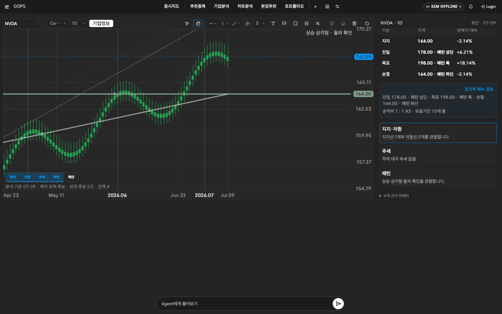

01 · PROBLEM
정보는 흩어지고,
판단 시점은 짧습니다.
- 차트·뉴스·재무·기업 관계가 서로 다른 화면에 분절
- AI 답변과 실제 숫자 근거가 어긋날 위험
- 분석에서 주문까지 사용자 통제 경계가 불명확
종목을 찾는 사람에게 기준을,
시장을 읽는 사람에게 방향을.
GOPS는 실시간 시장 데이터를 시점이 고정된 evidence snapshot으로 만들고, 질문 의도에 맞는 역할 에이전트가 분석합니다. 결과는 차트 작도·패널 구성·조건 제안으로 연결되지만, 실행 권한은 언제나 사용자와 주문 런타임에 남습니다.

일반 사용자는 4단계만 보면 되고, 각 단계의 계약은 아래 아키텍처에서 추적할 수 있습니다.
S&P 500 히트맵, 실시간 차트, Bid/Ask·Order Flow로 시장 상태를 봅니다.
“이 상승은 무엇이 지지해?”처럼 자연어로 맥락을 요청합니다.
차트·뉴스·기업 관계·재무·리스크 근거를 역할별로 수집하고 종합합니다.
패널과 차트 제안을 검토한 뒤 paper/KIS 모의 주문은 별도 확인을 거칩니다.
Alpaca 실시간/과거 시세
SEC·Yahoo 기업 근거
KIS demo 주문
Kafka key=symbol 순서
feed/session guard
at-least-once ingest
Redis: live/cache
ClickHouse: time series
S3: replay/evidence
Postgres·GraphDB
cutoff · freshness · provenance
no-data를 숨기지 않는
불변 분석 입력
Chart · News · Relation
Financial · Risk
의도에 따라 bounded fan-out
React workspace 제안
조건·주문은 명시적 확인
Agent는 broker를 호출하지 않음
구현 범위는 React 19 차트 워크스페이스, FastAPI REST/WebSocket, Kafka 스트림 처리, Redis/ClickHouse/S3 저장, 역할 기반 Agent, paper/KIS demo 주문, Docker Compose와 AWS/EKS 배포 계약까지 이어집니다.